Author Photo Gallery
A curated collection of photographs from historical research, museum visits, technology history, music, travel, and other parts of the author's life and work.
The Prescott Girls Research
Photographs connected to the sampler discovery, family history, museum research, and historical places that helped inspire The Prescott Girls.
{kind=link}
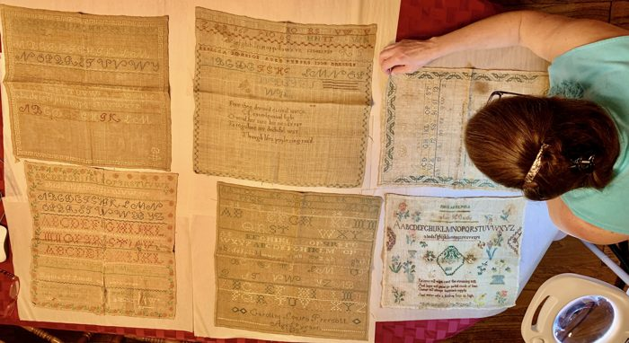
Lori Studying the Samplers
Lori Love examines the group of nineteenth-century samplers after their discovery at auction, an early step in identifying the Prescott, Johnson, and Canby family connections.

Pownalborough Court House
The Pownalborough Court House in Dresden, Maine, where the Prescott sisters lived in the 1830s and where Beckie's, Sallie's and Mother's samplers were returned.
{kind=link}
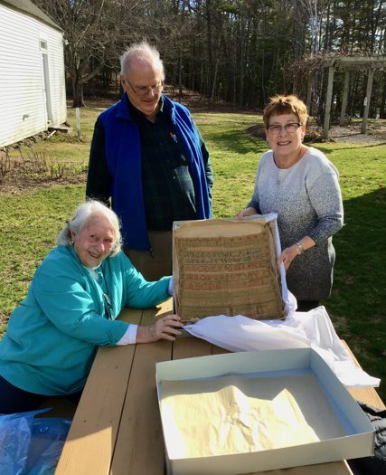
Samplers Returned to the Courthouse
Descendants and supporters gather at the Pownalborough Court House as Prescott family samplers return to the place where the girls once lived.

Louisa Prescott Marriage Record
Marriage record connected to Caroline Louisa Prescott, whose family history helped shape the research behind The Prescott Girls.

Lori at the Prescott Family Graves
Lori Love visits the Prescott family graves in Dresden, Maine, part of the genealogical and place-based research behind the sampler story.
{kind=link}
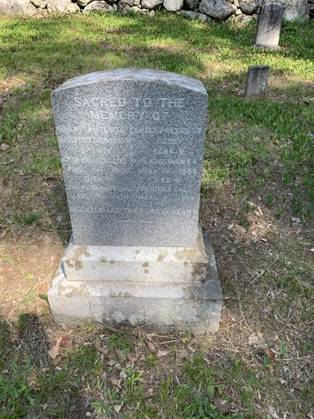
Rebecca Johnson Prescott Grave Marker
The grave marker of Rebecca Johnson Prescott, mother of Beckie, Louisa, and Sallie Prescott, whose family history is central to The Prescott Girls.
{kind=link}
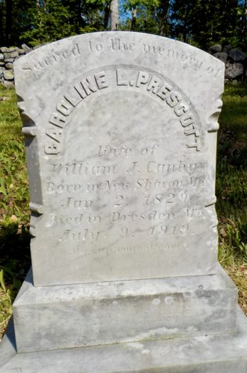
Caroline Louisa Prescott Canby's Grave Marker
The grave marker of Caroline Louisa Prescott Canby, whose 1838 sampler and later marriage into the Canby family connected the Prescott story to the Betsy Ross family.
{kind=link}
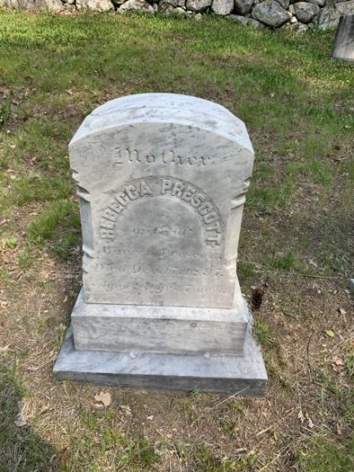
Sarah Prescott Grave Marker
The grave marker of Sarah Prescott, one of the Prescott sisters whose life and family context helped shape the historical research behind the book.
Museums, Collections, and Historical Visits
Museum and collection visits helped connect the sampler story to broader histories of textile work, family memory, preservation, and public history.
{kind=link}
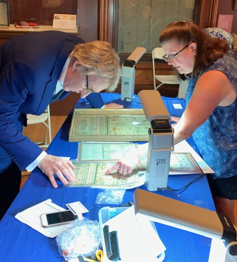
Visit to Antiques Roadshow
Lori discussing one of her other samplers with Leigh Keno during the filming of Antiques Roadshow
{kind=link}
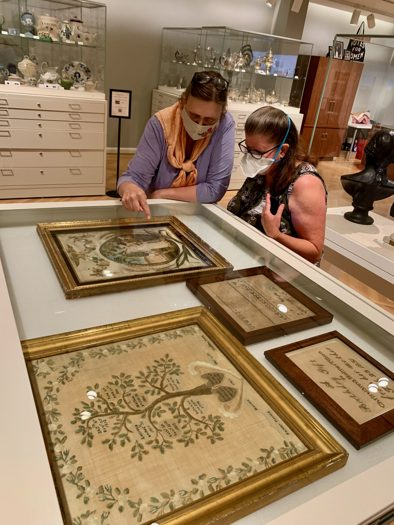
Historic Samplers at the DAR
Studying historic needlework and sampler examples at the Daughters of the American Revolution Museum in Washington DC
{kind=link}
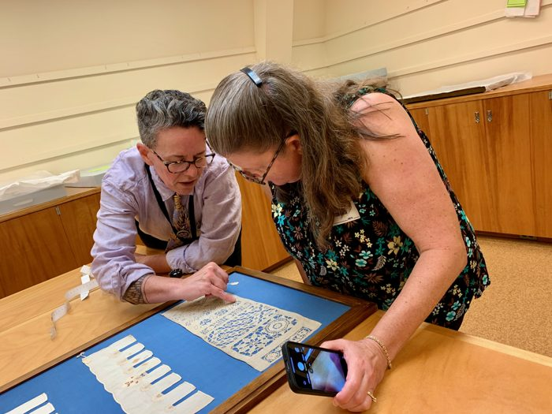
Studying a Sampler at Winterthur
Examining historic needlework at Winterthur with Laura Johnson as part of the broader research into nineteenth-century samplers and their makers.

Sampler Research Visit
Viewing historic samplers and related materials during a museum research visit with Elizabeth Farish, Chief Curator at the Strawbery Banke Museum
{kind=link}
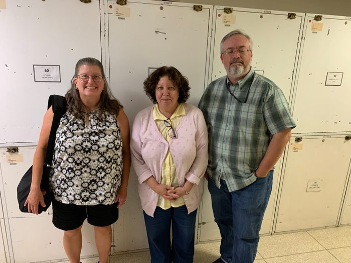
Research Visit in Washington, DC
In the archives at the Smithsonian in Washington, DC connected to historical research and textile study.
{kind=link}
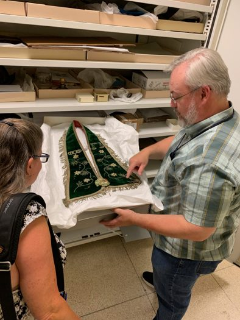
Collection Storage Visit
Examining textiles and historical materials during a behind-the-scenes collection visit at the Smithsonian
{kind=link}
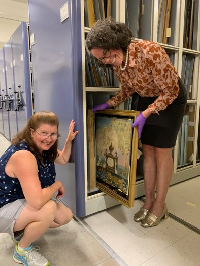
New England Collection Visit
A visit with Laura Johnson to the Historic New England Archives in Haverhill, MA

Guests at the Saco Museum
A research visit with Tara Vose Raiselis - Curator/Director Saco Museum
Places, Travel, and Outdoor Exploration
Travel, hiking, camping, and outdoor exploration are part of the author's life and often provide space for reflection, photography, and discovery.

Yosemite High Country
A Yosemite landscape photographed during one of the author's recurring trips to the park.
{kind=link}
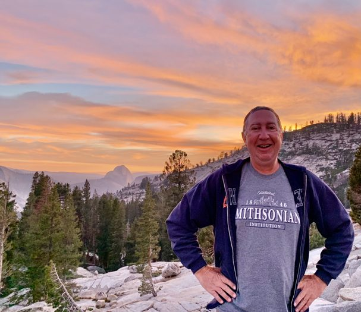
Evening in Yosemite
An evening view in Yosemite National Park, reflecting the author's long connection to outdoor travel and photography.

Yosemite Trail Self-Portrait
A trail photograph from Yosemite, one of the author's frequent places for hiking, camping, and reflection.

Grand Canyon Visit
Aric and Lori during a research and travel year that combined historical work, photography, and outdoor exploration.
{kind=link}
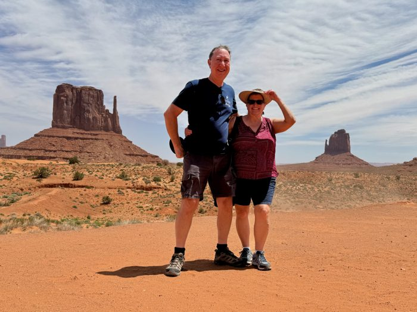
Monument Valley
Travel through the Monument Valley region, part of the author's broader interest in landscapes, history, and photography.
{kind=link}
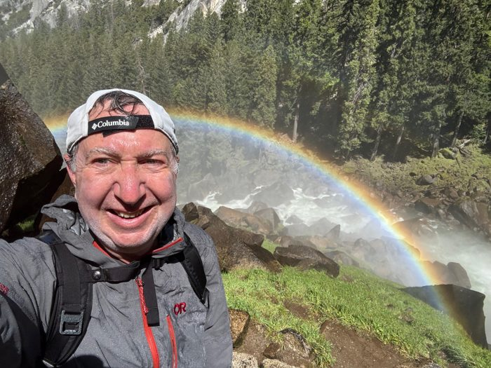
Rainbow on the Mist Trail
A rainbow along a Yosemite waterfall trail during one of the author's visits to the park.

Crater Lake
A photograph at Crater Lake National Park during a western travel and exploration trip.

Kīlauea at Night
Night viewing of volcanic activity at Hawaiʻi Volcanoes National Park.
{kind=link}
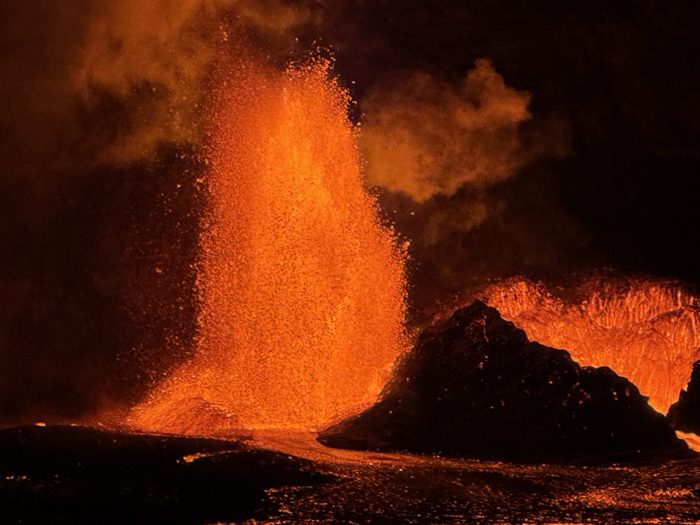
Volcanic Eruption Detail
A close view of volcanic activity during a visit to Hawaiʻi Volcanoes National Park.
{kind=link}
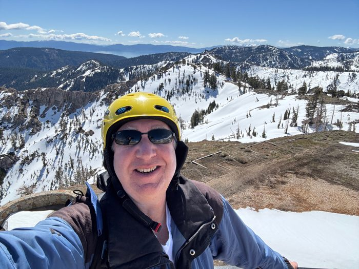
Spring Snowboarding
A spring snowboarding trip in the Lake Tahoe region.

Maine Harbor
Aric and Lori during a Maine research and travel trip.
{kind=link}
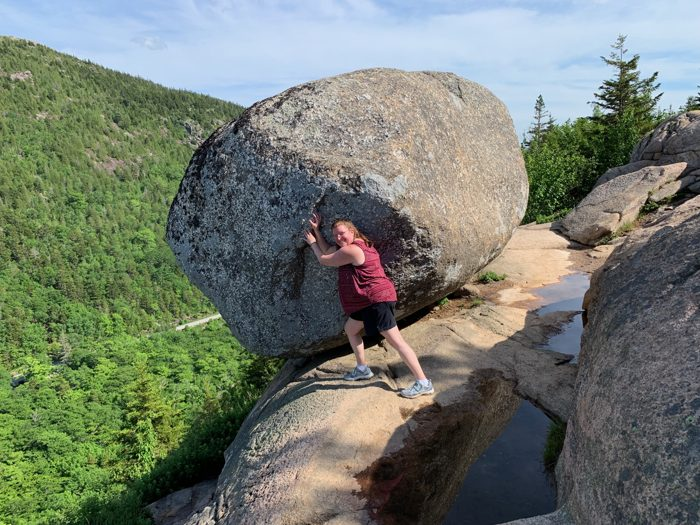
Bubble Rock, Acadia
A visit to Bubble Rock in Acadia National Park during a Maine research and travel trip.
{kind=link}
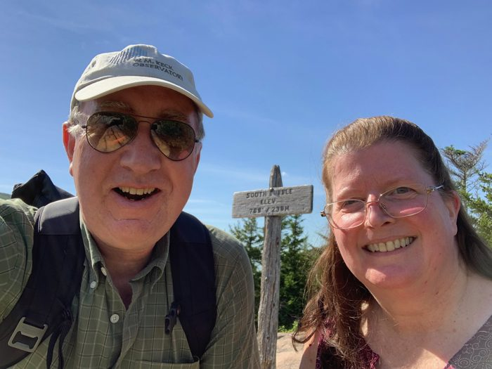
Acadia National Park
Aric and Lori in Acadia National Park during a Maine research and travel trip.
{kind=link}
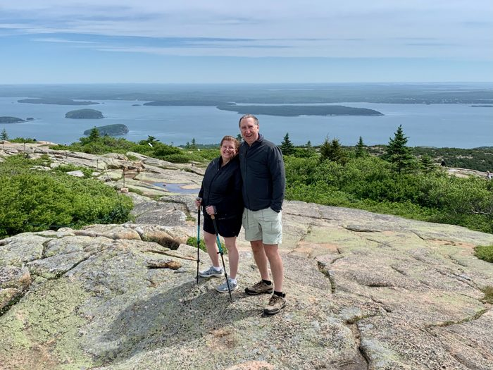
Acadia Overlook
A scenic overlook in Acadia National Park during the author's Maine travels.

Spring Point Ledge Lighthouse
A lighthouse visit in South Portland during a Maine research and travel trip.
{kind=link}
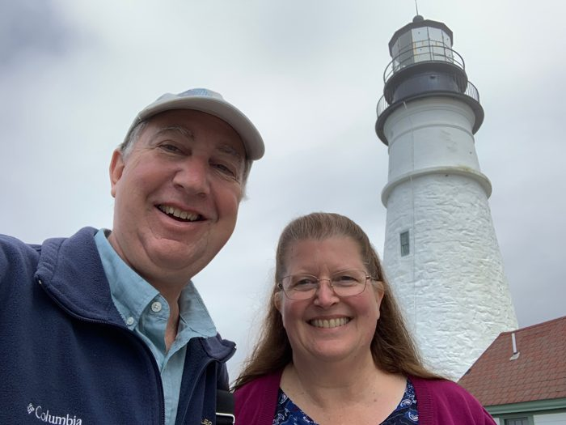
Portland Head Light
Aric and Lori at Portland Head Light during a Maine research and travel trip.

Sonoma Coast
A coastal photograph from Northern California.
{kind=link}
Stanford Dish
A walk near the Stanford Dish, close to the author's Palo Alto roots.

Palace of Fine Arts
A San Francisco visit near the Palace of Fine Arts, connected to the author's Bay Area life and travels.
{kind=link}
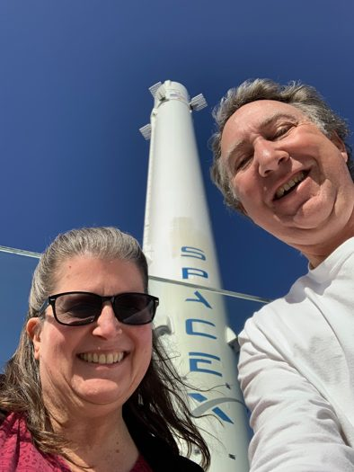
SpaceX Headquarters
A selfie with a Falcon 9 Booster at SpaceX
Hobbies and Activities
Spaceflight, Movies, Soaring, Old-Time model planes just a few of the author's interests
{kind=link}
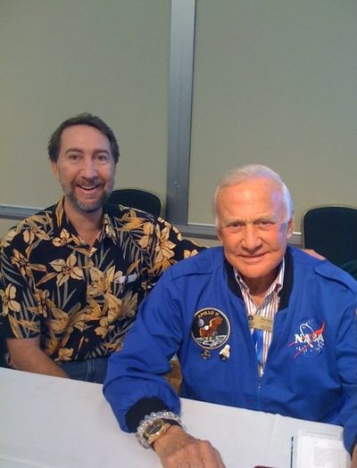
Hanging with Buzz
A meeting with Buzz Aldrin, reflecting the author's longtime connections to technology, storytelling, and exploration.
{kind=link}
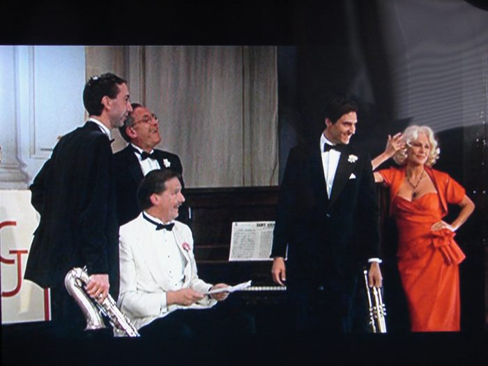
Filming the movie 'Swing' with Jacqueline Bisset
A group photograph from an event connected to the author's years in games, technology, or entertainment.

Cast Photo with Barry Bostwick, Jacqueline Bisset an Inness Casey
Fun on the set.

Cross-Country RC Gliders
RC glider flying in California's Central Valley, combining technology, craft, and outdoor competition.
{kind=link}
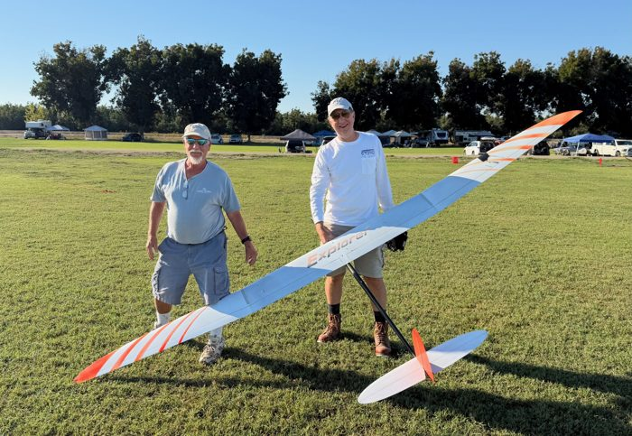
RC Glider Competition
RC glider flying in California's Central Valley.

RC Glider Team
A group photograph from an RC glider event, part of the author's interests in flight, engineering, and outdoor competition.

RC Glider Launch
Preparing to launch an RC glider, part of the author's long interest in flying, building, and outdoor hobbies.

Golden Gate Bike Ride
A bicycle ride near the Golden Gate Bridge, part of the author's Bay Area life and outdoor travels.
Recognition
Recognition for this project
{kind=link}